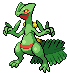

Principal
Informações
Principais Notícias
Alunos do CEFET-MG dizem os melhores pokemons de todas as gerações, clique para ver mais.
Você sabe quais os tipos de iniciais existem no mundo pokemon? Clique para descobrir.
Você sabe quais os tipos de iniciais existem no mundo pokemon? Clique para descobrir.
